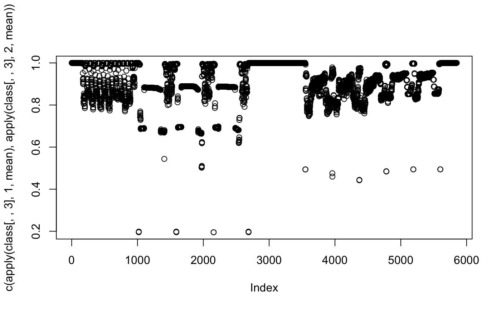
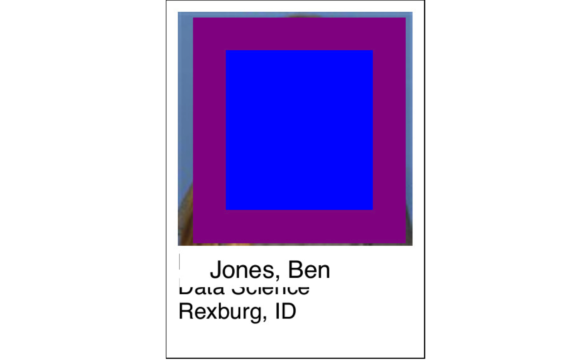
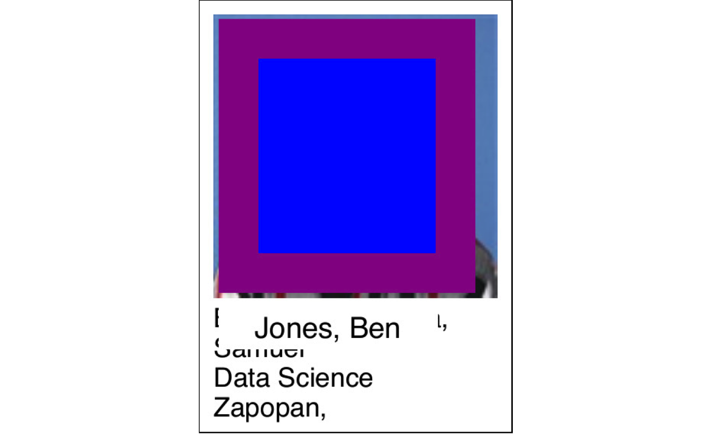
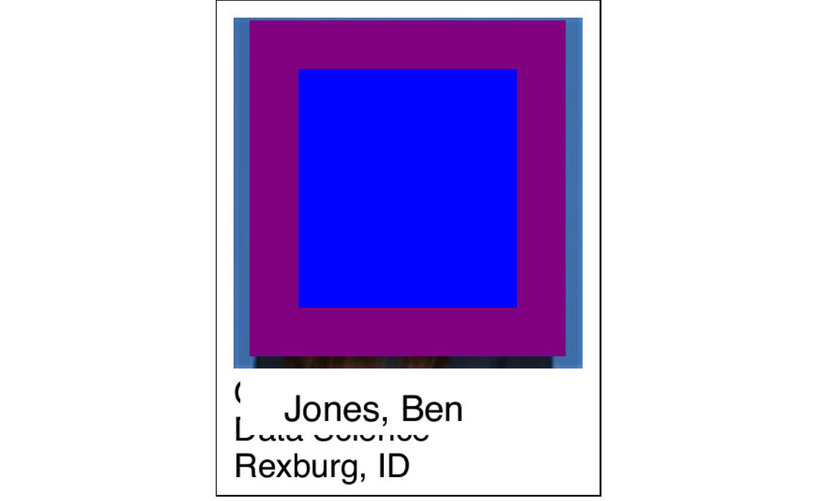

build_cards.Rmd
# https://web.byui.edu/FacultyClasses/ClassList
# devtools::install_github("hathawayj/cards")
library(tidyverse)
#> ── Attaching packages ──────────────────────────────────────────────────────────────────────────────────────────────────────── tidyverse 1.2.1 ──
#> ✔ ggplot2 3.2.1 ✔ purrr 0.3.2
#> ✔ tibble 2.1.3 ✔ dplyr 0.8.3
#> ✔ tidyr 0.8.3 ✔ stringr 1.4.0
#> ✔ readr 1.3.1 ✔ forcats 0.4.0
#> ── Conflicts ─────────────────────────────────────────────────────────────────────────────────────────────────────────── tidyverse_conflicts() ──
#> ✖ dplyr::filter() masks stats::filter()
#> ✖ dplyr::lag() masks stats::lag()
library(cards)
library(jpeg)
library(grid)
library(ggplot2)The example works partially. I have not had problems with the pdf files downloaded from BYU-I - https://web.byui.edu/FacultyClasses/ClassList. My tweaking of the file so for the example makes it not work as clear but the point of the functions and package is shown.
pdf_path <- system.file("extdata", "faces.pdf", package = "cards")
temp_path <- fs::path_temp()
dir_path <- pdf_2image(file = pdf_path)
jpg_files <- fs::dir_ls(dir_path, regexp = "jpg")
pdata <- jpeg_roll(image_files = jpg_files)
#> [1] 1
#> [1] 2
#> [1] 3
#> [1] "/private/var/folders/r_/_gn6m3jn7kq30l32c7prwlkc0000gn/T/RtmpmDYh7c/temp_libpath489c4e0b4ccd/cards/extdata/page_1.jpg"
gg_object <- ggplot_faces(faces = pdata$all_faces,faces_names = pdata$all_names)